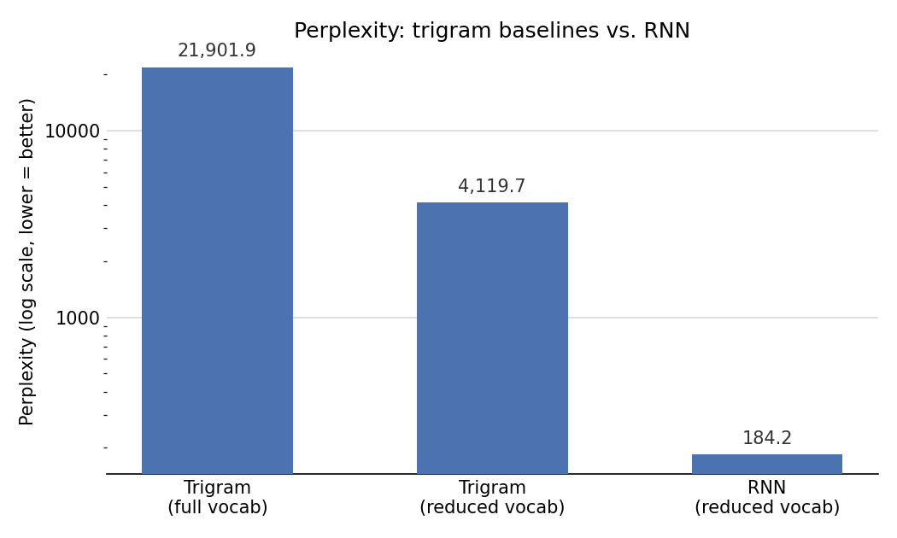

Synthetic Movie Review Generator: Trigrams to LSTM to a GAN-style Discriminator
The problem
Can a language model trained from scratch (no pretrained embeddings, no prebuilt tokenizer) generate movie reviews that pass as human-written — and how do you actually measure “passes as human,” beyond just eyeballing the output? The assignment required building a statistical baseline, a neural language model, and a discriminative classifier to test the neural model’s output against real reviews, then reflecting honestly on what each stage could and couldn’t do.
Approach
Tokenization. Word-level tokenization over subword methods (like BPE) — less compact, but every token is human-readable, which made it far easier to debug the pipeline and inspect vocabulary decisions at every stage. <START>/<END> mark sentence boundaries, <PAD> supports fixed-length batching, <UNK> absorbs rare words after vocabulary reduction.
Trigram baseline (N=3). A bigram conditions on too little context to capture phrase structure; a four-gram, given the corpus size, would mostly fall back on smoothing rather than observed counts. Trigram was the pragmatic middle ground, with Laplace (k=1) smoothing so perplexity stays finite even over unseen contexts.
Vocabulary reduction for the LSTM. Softmax cost scales with vocabulary size, so training on the full ~104K-word vocabulary wasn’t feasible in the time available. Keeping only the top 20% most frequent tokens (20,823 words) cut the softmax output layer drastically while still covering 97.3% of token occurrences — the <UNK> rate in training data came out to just 2.7%.
Architecture. Embedding(128) → LSTM(128) → Dense(softmax), trained on a fixed 20-token context window (chosen against the corpus’s median sentence length of 17). Alternatives tried and rejected: a smaller 72-unit LSTM (meaningfully hurt validation accuracy — hidden size is the real bottleneck on context capacity), an extra dense layer before the softmax (disproportionate cost, since it sits right before the vocabulary-sized layer), and larger embeddings (diminishing returns against the ~1hr training budget).
A real bug worth including. A stride-based downsampling rule kept only every k-th training position — except a “keep_end” special case that always retained <END> targets regardless of stride, meant to stop short sentences being underrepresented. That asymmetry silently inflated <END>’s frequency in the training targets relative to every other token. The trained model learned this distortion perfectly: it assigned <END> ~90% probability at the very first decoding step, collapsing generation immediately. Diagnosed by checking the empirical <END> frequency in training targets against the true corpus distribution — a data construction bug, not a modelling one. Fixed by applying stride uniformly and instead explicitly keeping each sentence’s first two positions (protecting short-sentence coverage without biasing the target distribution).
Discriminator. A second, deliberately shallow model — Embedding → Gaussian noise → global average pooling → Dense(ReLU) → sigmoid — trained to distinguish real reviews from the LSTM’s own generations, both represented in the same reduced vocabulary (otherwise the discriminator could cheat by keying off <UNK> density instead of learning real structural differences).
Key findings
- The LSTM cut perplexity by >20x over the reduced-vocabulary trigram (184.2 vs. 4,119.7) and by >100x over the full-vocabulary trigram (21,901.9) — a large, unambiguous jump in raw predictive performance.
- But a simple, shallow discriminator still separated real from generated text almost perfectly — ROC AUC 0.975, accuracy 92%. That gap is the actual headline finding: perplexity says the LSTM models local structure far better than a trigram, while the discriminator shows it still hasn’t matched the true distribution of real reviews. Both can be true — better next-token prediction doesn’t automatically mean indistinguishable text.
- Generated text is fluent but generic. The LSTM leans hard on high-frequency phrases (“very good”, “a little too long”) and coherence degrades over longer sequences — consistent with the discriminator’s recall gap (53 real reviews misclassified as fake) showing partial, not full, distributional overlap.
- The stride/
<END>bug is the more useful lesson than any hyperparameter choice — the collapse looked like a modelling failure but was entirely a data construction artifact, caught by checking target-token frequencies against the corpus rather than by tuning the network.

Sample generations, trigram vs. LSTM:
| Method | Generated text |
|---|---|
| Trigram (greedy) | the film is a very good |
| Trigram (top-10) | and i was watching a very bad acting and a half of the film is that it was very good |
| LSTM (greedy) | the film is a very good film |
| LSTM (top-10) | its a great movie but its not a great movie for the time of this film |
| LSTM (top-10) | the film was a little too long |
Full report
The write-up above covers the headline results — the full report includes the complete tokenisation rationale, the trigram smoothing derivation, the architecture search (what was tried and rejected for the LSTM), and a reflection on using LLMs as a study/work tool (Part 5 of the assignment).
Code
Trigram counting and generation — the statistical baseline:
def build_trigram_counts(dataset):
all_sentences = []
for text, y in dataset:
for sentence in tokenize_text(text):
all_sentences.append(["<START>"] + sentence)
trigram_counts = {}
for sentence in all_sentences:
for i in range(2, len(sentence)):
w1, w2, w3 = sentence[i-2], sentence[i-1], sentence[i]
context = (w1, w2)
trigram_counts.setdefault(context, {})
trigram_counts[context][w3] = trigram_counts[context].get(w3, 0) + 1
return trigram_countsThe LSTM language model — embedding, single recurrent layer, softmax over the reduced vocabulary:
model = keras.Sequential([
layers.Input(shape=(max_len,)),
layers.Embedding(input_dim=reduced_vocab_size, output_dim=128, mask_zero=True),
layers.LSTM(128),
layers.Dense(reduced_vocab_size, activation="softmax"),
])
model.compile(optimizer="adam", loss="sparse_categorical_crossentropy",
metrics=["sparse_categorical_accuracy"])The discriminator — intentionally shallow, so a strong result says something about the generator’s remaining gap, not the classifier’s sophistication:
disc = keras.Sequential([
layers.Input(shape=(max_len_disc,)),
layers.Embedding(input_dim=reduced_vocab_size, output_dim=64, mask_zero=True),
layers.GaussianNoise(0.05),
layers.GlobalAveragePooling1D(),
layers.Dense(256, activation="relu"),
layers.Dropout(0.3),
layers.Dense(1, activation="sigmoid"),
])
disc.compile(optimizer=keras.optimizers.Adam(1e-3),
loss="binary_crossentropy",
metrics=["accuracy", keras.metrics.AUC(name="AUC")])